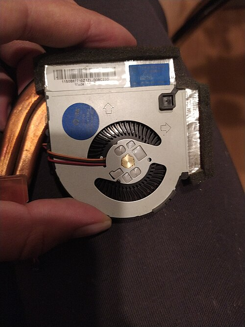

Qualify a donor laptop fan and heatsink
Separate a blocked air path, failing blower, worn connection and poor heat transfer with a known-good assembly and repeatable load.
Locate the fan, fins and heat path
The fan drives air through a fin stack. The heat pipe or heat spreader brings heat to those fins from the processor. A plastic shroud or foam strip can direct air through the fins. A stuck or rattling fan, a blocked fin stack and a poor thermal interface can produce similar hot-laptop symptoms. A quiet fan at low load may be normal. Prove the original symptom with the manufacturer’s diagnostics or a controlled light load first. P60 cooling and input diagnosis.

Photo by Flanoz, scaled with on-page callouts. Original photo · CC0.


Photo by Saud, scaled with on-page callouts. Original photo · CC BY-SA 4.0.

Watch. Follow the screw sequence, cable release and the way the thermal fan assembly sits. The demonstration uses the named ThinkPad variants. Use your donor’s manual for its sequence. Lenovo’s ThinkPad thermal fan replacement on YouTube.
Match twice before you connect a donor
For your owned trainer, find the original fan and heatsink part or service numbers. Compare model, revision, mounting holes, outlet direction, duct seal, cable length and connector. Check whether integrated graphics and discrete graphics versions use different fin or pad layouts.
Check the electrical specification and approved service part list. Two four-wire connectors can have different pin order, voltage or signalling. A fan may carry power, ground, tachometer feedback and a control input. Use the documented host for your test. Leave unidentified fan leads off bench power.
With the host shut down and battery disconnected as directed, clear loose material using the manufacturer’s method. Hold the rotor stationary while cleaning with approved air. Inspect the shroud and the fin passages. If removing the heatsink, follow the specified mounting sequence and thermal interface material, pad thickness and positions. Real dust often builds up on the concealed side of the fins. Framework’s heatsink and fan procedure.
Compare the same load before and after
Close the case as required for airflow. Use an OEM fan diagnostic first if available. Then apply the same documented light or normal test job for a fixed time under equivalent room and power conditions. Capture CPU package temperature, RPM if the host reports it, sound and exhaust airflow. Record ambient conditions and throttling if present. Stop a run if the fan fails to start when commanded or temperatures rise abnormally.
| Observation | Next check |
|---|---|
| Fan speed rises but exhaust flow remains weak | Inspect the fin stack, exhaust path and duct seal when isolated. A spinning rotor alone does not prove airflow. |
| Donor proves normal speed and airflow, temperature climbs rapidly | Check thermal contact, film, paste, required pads and seating. Compare the exact heatpipe assembly with the service information before calling it defective. |
| Original fan rattles under the same command. An exact donor removes the rattle. | Verify the donor’s RPM or OEM diagnostic, sustained airflow and temperatures at the same load after reassembly. |
| Both exact compatible fans fail the same host test | Prove that the reference fan works in a second compatible host. Then investigate the original host’s connector, supply and control path. |
Keep the part number, the measured airflow or observation method, sound, temperature trend and how you matched the test conditions. Release the donor only for the models and assemblies you can substantiate.